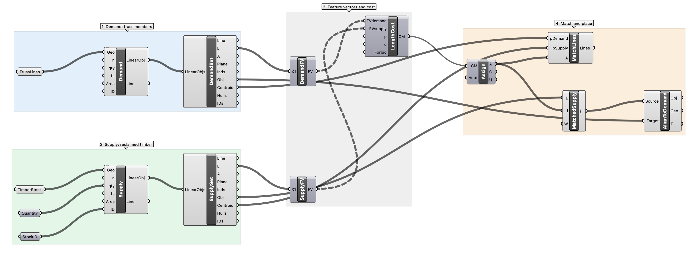

Linear members from stock
Match the members of a structure to an inventory of reclaimed linear elements (timber, steel sections, tubes), so that every member gets a piece that is long enough, with as little waste as possible.
Example file: 01_linear_truss.gh. The demand is a 12 m Warren truss (31 members); the supply is 24 reclaimed timber pieces between 1.2 m and 4.5 m long, each with a quantity of 1 to 3 and an ID. Units are millimetres.

1. Demand
The truss lines go into a LinearObject and then a LinearSet. For straight lines the effective length is the line length. The set provides each member's EffectiveLength, Centroids and Objects.
2. Supply
The timber Breps go into a second LinearObject, together with the Quantity and ID lists. PCA finds each piece's length direction, whatever its orientation in the model, and Length is the extent along it. The supply LinearSet expands each piece by its quantity: the 24 pieces with quantities 1–3 become one entry per physical piece. The Indexer and IDs outputs map each entry back to the inventory.
To account for damaged ends, set the supply LengthBuffer below 1 (for example 0.95). To match by cross-section as well, give the supply objects an Area (or let DCT estimate it from the bounding box) and add Area to the feature vectors.
3. Feature vectors and cost
Each side gets a FeatureVector with one feature, EffectiveLength. AsymmEuclideanDistance compares them: a piece at least as long as the member (it can be cut to length) costs the difference in length, with Power1 = 1; a piece that is too short costs the difference squared (Power2 = 2), which strongly discourages it. Because the lengths are in millimetres, the differences are large numbers and the integer rounding of the costs is negligible.
4. Match and place
Match assigns one piece to every member at minimum total cost. MatchLines draws a line from each member to its piece. List Item picks the assigned supply objects (Objects of the supply set, indexed by Assignment), and AlignToObject moves each onto its member. Each piece is centred on its member, so the overhang at both ends is the length to cut off.
Variations
- Several features: add
Area(or a required area from a structural analysis) as a second feature. Scale the features withPairNormalizeso that length in millimetres does not dominate area in square millimetres. - Structural analysis: the members' required sizes can come from an analysis plugin such as Karamba3D, so that matching respects both length and capacity:
- Shortage: with fewer pieces than members, the unserved members get
-1inAssignment. Filter them out before List Item (see Matching).